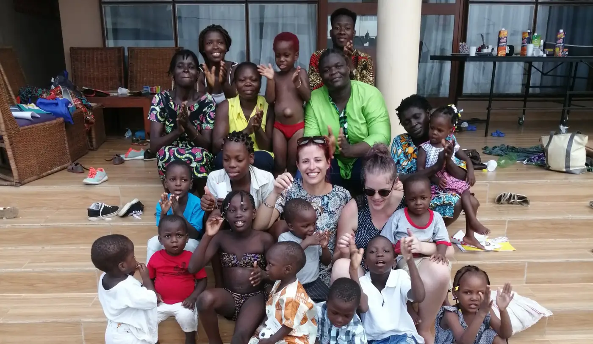

Une grande famille à Cotonou
OHANA veut dire « famille ». Notre mission : venir en aide aux enfants orphelins, vulnérables ou privés de famille au Bénin.
Notre histoire
L’idée de créer une association pour aider les enfants est née au sein d’une équipe franco-béninoise travaillant dans la santé et le social. Notre priorité : une prise en charge globale des orphelins et des enfants abandonnés, surtout les plus jeunes (0-5 ans). Nous croyons que le plus important pour un enfant est d’être entouré d’une famille : c’est pourquoi nous travaillons à maintenir le lien familial et à permettre un retour en famille.
OHANA est une organisation indépendante, sans caractère ethnique, politique ni idéologique. Son nom vient d’un dessin animé qui raconte l’histoire d’un personnage abandonné, recueilli et aimé malgré les différences.
- 2016
Notre future présidente s’installe au Bénin et se passionne pour la protection de l’enfance.
- 2017
Naissance du projet : l’ONG OHANA est lancée avec une équipe béninoise.
- Janvier 2018
Ouverture du centre : le premier enfant est accueilli et l’ONG est officiellement créée.
- Rentrée 2018
Les enfants sont scolarisés.
- Janvier 2019
Ouverture de l’accueil de jour pour les enfants du quartier.
- 2020
Une éducatrice spécialisée rejoint l’équipe et prend la direction du centre.
Nos valeurs
Protection
La sécurité et le bien-être de chaque enfant passent avant tout.
Famille
Nous préservons le lien familial et favorisons le retour en famille.
Dignité
Éducation, soins et respect pour une vie plus digne.
Transparence
Les parrains sont informés chaque mois de la vie du centre.
Une équipe franco-béninoise
Présidente
Fondatrice de l’ONG, elle coordonne l’équipe, les enfants et les partenaires.
Directrice
Éducatrice spécialisée, elle dirige le centre au quotidien.
Assistant social
Il suit la situation de chaque enfant et le lien avec les familles.
Équipe éducative
Les « tantines » assurent l’éveil, les soins et l’affection de chaque jour.
Cuisinière
Elle prépare 4 repas par jour avec des produits locaux.
Envie de nous rejoindre ?
Parrainez un enfant, donnez ou venez nous rencontrer.